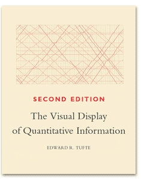
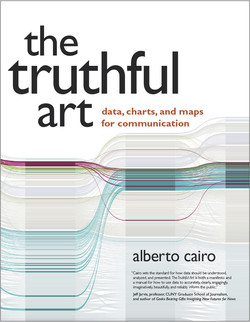

Best practices in Data Visualization
Recap: Level of care depends on the audience
There are three main audiences in mind when creating data visualizations:
For your eyes only (FYEO). These are quick and dirty plots, without annotation. Meant to be looked at once or twice.
To share with others internally. These mostly need to stand on their own. Axes labels, titles, colors as needed, possibly captions.
Professional - Contains all bells and whistles needed to make it publication quality.
Highly recommended references

The classic book on statistical graphics, charts, tables. Theory and practice in the design of data graphics, 250 illustrations of the best (and a few of the worst) statistical graphics, with detailed analysis of how to display data for precise, effective, quick analysis.
Highly recommended references

In The Truthful Art, Cairo explains the principles of good data visualization. He describes five qualities that should be your foundation when you work with data visualization: truthful, functional, beautiful, insightful, and enlightening. Cairo also gives some great examples of biased and dishonest visualization.
Five qualities of great visualizations (Cairo)
- Truthful. Be honest with scaling and relationships.
- Functional. Does it accurately convey the correct information?
- Beautiful. Or at least aesthetically pleasing.
- Insightful. Does it reveal new information?
- Enlightening. Consequence of qualities 1-4
References:
Graphing with intent
Along with having the audience in mind, it is important to give thought to the purpose of the chart.
The effectiveness of any visualization can be measured according to how well it fulfills the tasks it was designed for. (A. Cairo, 2018).
Manage your ink to information ratio
“Data-ink is the non-erasable core of the graphic. (Tufte, 83)”

Darkhorse Analytics demonstrates how “data looks better naked”
What to watch out for
- Avoid complexity
- Choose colors mindfully
- Do not add extra dimensions
- Be truthful with the scaling
- Check publishing guidelines
- Be consistent with selected themes
- Do not over-interpret
- Plotting with missing data
Inspirations
Not sure what type of graph to create?
Poke around on the R Graph Gallery or Python version. Appropriate for all languages as the goal is to identify the graph type